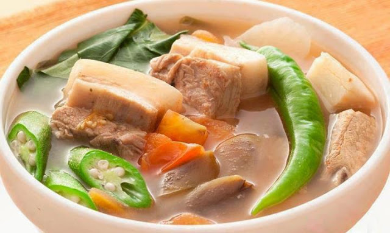

Top 1

Chicken Wings
Chicken wings are white meat, even though they're juicier and have a more concentrated poultry flavor, like dark meat. Many people think of Buffalo wings when they think of this part of the chicken.
Top 2

Chicken Adobo
Chicken adobo, also known as adobong manok, is a quintessential filipino braised chicken, marinated and stewed with vinegar, soy sauce, garlic, bay leaves, black peppercorns. The word adobo actually came from the spanish word "adobar," meaning to marinate or pickle.
Top 3

Chicken Cordon Bleu
is a pork-lover's delight—crunchy pork skin enclosing savory tender meat. Crispy pata is usually defined as deep-fried pork trotters or knuckles, when it is, in fact, a cut from the hock to the foot.
Top 4
Crispy Pata
Crispy pata is a pork-lover's delight—crunchy pork skin enclosing savory tender meat. Crispy pata is usually defined as deep-fried pork trotters or knuckles, when it is, in fact, a cut from the hock to the foot.
Top 5
Fish Fillet
A fish fillet, from the French word filet (pronounced [filɛ]) meaning a thread or strip, is the flesh of a fish which has been cut or sliced away from the bone by cutting lengthwise along one side of the fish parallel to the backbone. In preparation for filleting, any scales on the fish should be removed.
Top 6

Lechon Belly
Pork Belly is the boneless cut that remains after the loin and spareribs are removed. Pork belly comes from a hog's belly' or underside after the loin and spareribs have been removed. Fresh pork belly is succulent and richly flavorful and is often served in small portions.
Top 7

Mango Graham Float
Mango float or crema de mangga is a Filipino icebox cake dessert made with layers of ladyfingers (broas) or graham crackers, whipped cream, condensed milk, and ripe carabao mangoes. It is chilled for a few hours before serving, though it can also be frozen to give it an ice cream-like consistency.
Top 8

Pork Adobo
This is a recipe post for Filipino Pork Adobo. It is a dish composed of pork slices cooked in soy sauce, vinegar, and garlic. There are version wherein onions are also added. Adobo is a popular dish in the Philippines.
Top 9

Pork-Sinigang-Soup
Sinigang is a classic Filipino soup characterized by its sour and savory medley of flavors. It's popular comfort food in the Philippines, usually served on its own or paired with steamed rice on rainy days to ward off the cold.
Top 10

Lasagna
Lasagna is a wide, flat sheet of pasta. Lasagna can refer to either the type of noodle or to the typical lasagna dish which is a dish made with several layers of lasagna sheets with sauce and other ingredients, such as meats and cheese, in between the lasagna noodles.